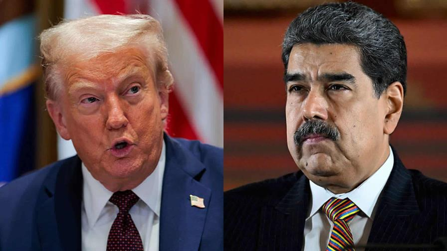
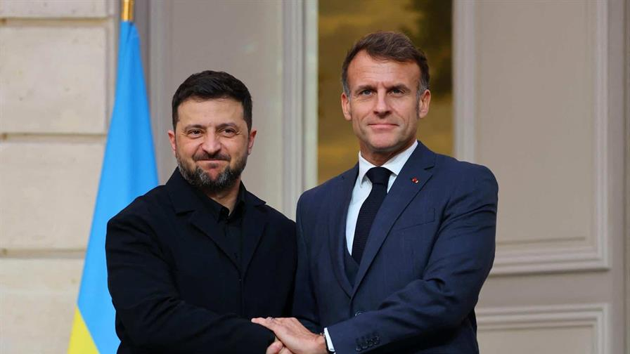
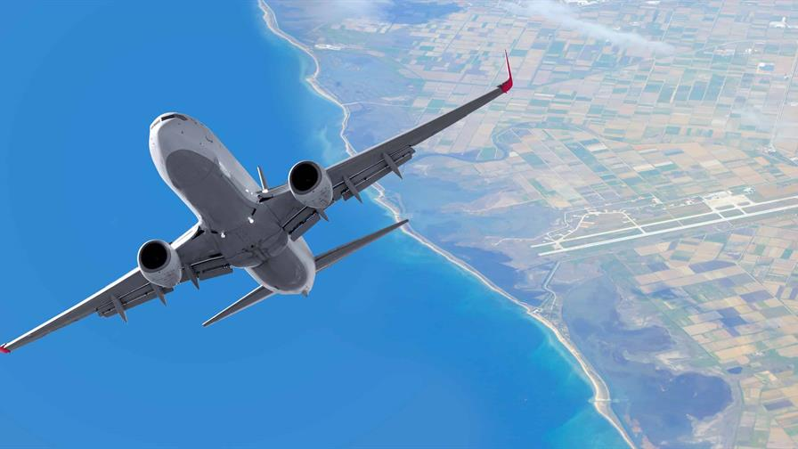

Trump dio ultimátum a Maduro y garantías para que deje el poder
Publicado por Jonathan

El presidente de Estados Unidos, Donald Trump, confirmó ayer que sostuvo una conversación directa con Nicolás
Maduro, una comunicación que él mismo describió como "breve y clara", según reportó la agencia Reuters
citando declaraciones ofrecidas por el mandatario a periodistas a bordo del Air Force One.
Trump señaló que el contacto tuvo lugar en días recientes y que fue parte de los esfuerzos de Washington por
presionar una salida política a la crisis venezolana. No se ofrecieron detalles adicionales sobre el
contenido de la llamada, aunque funcionarios estadounidenses habían adelantado que el mensaje central fue
advertir al mandatario venezolano que el tiempo para negociar una transición es limitado.
La confirmación presidencial llega luego de que el Miami Herald y otras fuentes en Washington revelaran que
la administración estadounidense había transmitido a Maduro un ultimátum y una oferta de garantías,
incluyendo la posibilidad de asilo en un tercer país y protección legal para él y su círculo inmediato, si
aceptaba facilitar un proceso de transición ordenada.
Basket
LeBron James se perderá el partido de los Lakers ante Pelicans este domingo
Publicado por Alex
Los Angeles Lakers no contarán con LeBron James cuando el equipo se enfrente a los New Orleans
Pelicans el domingo, pero no parece un problema grave. James fue baja de categoría para el partido
del domingo debido a una lesión en el pie, según ESPN.
Esta decisión se produce cuando los Lakers tienen previsto jugar dos días consecutivos, escribe
Chris Cwik, de Yahoo Sports. El partido está señalado para las 10:30 de esta noche.
James, quien se perdió los primeros 14 partidos del equipo debido a una ciática, ha tenido un buen
rendimiento en su regreso, pero aún no ha disputado partidos consecutivos.
La decisión de los Lakers de dejar a James sin jugar el domingo podría formar parte del proceso de
recuperación del jugador de 40 años. También es posible que los Lakers simplemente le estén dando un día de
descanso para que esté fresco para el partido del lunes contra los Phoenix Suns.
Esto último tiene sentido, ya que los Lakers podrían no necesitar a James para derrotar a los Pelicans
(3-17). Con un récord de 12-9, los Suns se presentan como un rival más difícil.
Politica
Zelenski se reúne con Macron en París para abordar las negociaciones sobre Ucrania
Publicado por Benito

El presidente ucraniano, Volodomir Zelenski, viajó este lunes a París para reunirse con su par
francés, Emmanuel Macron, en un contexto de presión y cuando Donald Trump se dice optimista
sobre una solución del conflicto con Rusia.
Estados Unidos presentó hace 10 días un proyecto de 28 puntos, redactado sin los aliados
europeos de Kiev, destinado a poner fin al conflicto desencadenado por la ofensiva rusa contra
Ucrania en febrero de 2022.
Y desde entonces multiplica los contactos diplomáticos. Estados Unidos recibió el domingo en
Florida a una delegación ucraniana, y el martes el presidente ruso, Vladimir Putin, recibirá al
enviado estadounidense, Steve Witkoff, en Moscú.
La semana que comienza se anuncia "crucial" para Ucrania, afirmó el lunes la jefa de la diplomacia
de la Unión Europea, Kaja Kallas, antes del inicio de una reunión de los ministros de Defensa
europeos en Bruselas.
Vuelos
Aerolíneas y viajeros, pendientes de recomendaciones sobre Venezuela tras aviso de Trump
Publicado por Juan

La advertencia del presidente estadounidense, Donald Trump, a aerolíneas y pilotos para que
tengan en cuenta que el espacio aéreo de Venezuela "permanecerá cerrado en su totalidad" ha
elevado la incertidumbre de los pasajeros con viajes pendientes desde o hacia España, como
manifiestan en sus continuas consultas en redes sociales.
De momento, las compañías españolas siguen pendientes de si la Agencia Estatal de Seguridad
Aérea (AESA) prorroga el aviso que lanzó el pasado 24 de noviembre -en vigor hasta este
lunes- para evitar volar a la zona, si bien Air Europa ya anunció que cancelaba también las
dos frecuencias Madrid-Caracas del 2 de diciembre.
De hecho, ante las preguntas de los viajeros dirigidas a la cuenta oficial de Air Europa en
X, la aerolínea publicaba este sábado el siguiente mensaje: "En estos momentos los vuelos
a/desde Venezuela están cancelados hasta el día 02 de diciembre. En caso de que la situación
en Venezuela no mejore, se seguirán cancelando vuelos".
Con el fin de que los usuarios puedan reajustar sus planes, Air Europa ha habilitado
condiciones especiales tales como cambios de fecha gratuitos en sus vuelos hasta el 28 de
febrero de 2026, inclusive; cambio de ruta sin coste a o desde Medellín y Bogotá (Colombia)
o Panamá; un vale o un reembolso.